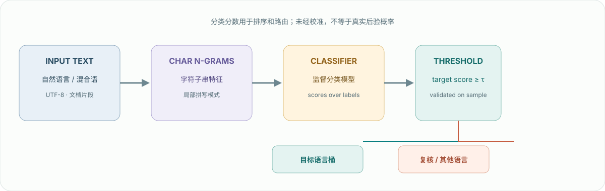

MODULE 04 / LLM DATA ENGINEERING
语言识别与过滤
理解 fastText 语言识别模型、置信度阈值、低资源语言风险与多语言数据路由。
语言识别不是“看一眼字符就知道语言”。在多语言网页、短文本、代码混合和低资源语言场景中，分类器会有不确定性；阈值决定了精度、召回和语言覆盖之间的取舍。
语言识别是数据路由，不只是过滤开关
对于单语言预训练，语言标签可以帮助筛选目标语料；对于多语言训练，它更常用于分桶、统计与采样配比。把非英语文档全部丢弃，是一个训练目标选择，而不是语言识别算法本身的必然结果。
同一文档可能包含多种语言；短文本可能只有产品名、代码或 URL；相近语言、文字系统共享和拼写变体也会造成混淆。因此，分类器输出应该与文本长度、语言分布和样本置信度一起分析。
fastText 的语言分类思路

fastText 官方发布的 lid.176 语言识别模型覆盖 176 种语言。官方文档列出未压缩 lid.176.bin 文件约 126 MB，压缩 lid.176.ftz 约 917 kB；模型训练数据包括 Wikipedia、Tatoeba 和 SETimes，输入预期为 UTF-8。
字符 n-gram 对短词、词形变化和部分拼写特征有帮助，不需要先为每种语言建立分词器。它仍然是一个监督分类模型，而不是能够理解整篇文档语义的通用多语言推理模型。
import fasttext
model = fasttext.load_model("lid.176.bin")
text = "自然语言处理需要可靠的数据来源。"
labels, scores = model.predict(text.replace("\n", " "), k=3)
for label, score in zip(labels, scores):
print(label.removeprefix("__label__"), float(score))注意：输出分数用于模型排序和阈值决策，不应在未经校准时直接解释为真实世界的后验概率。
从 argmax 到带阈值的路由
最简单的预测是选择得分最高的语言：
如果任务只需要保留目标语言 l_t，可以使用阈值路由：
阈值越高，通常越谨慎地接收目标语言样本，但也可能漏掉更多短文本、拼写变体和低资源语言样本。阈值应该在人工标注的验证集上，按语言、文本长度和来源分层评估，而不是把某篇论文的阈值复制到所有语料。
如何校准阈值，而不是凭感觉选 0.5
- 按目标语言和来源分层抽样，人工标注真实语言标签；混合语言文档单独标记。
- 按文本长度分桶，单独评估短文本与长文档。
- 扫描多个阈值，绘制 precision–recall 曲线，观察错误类型。
- 检查语言之间的混淆矩阵，尤其是共享文字系统的语言。
- 确定路由策略：保留、进入低置信度复核桶、或丢弃。
多语言模型更适合“识别后配比”，而不是“识别后只保留英语”。可以先按语言分桶，再根据训练目标控制 token 采样比例，同时监控每种语言的有效 token 数。
交互练习：阈值如何改变保留结果
下面四个分数是教学用的合成样本，不是 fastText 的真实预测，也不是论文统计。拖动阈值，观察同一批样本如何被路由。
本章参考资料
- fastText · Language identification：176 语言模型、文件大小、训练数据和输入要求。
- Joulin et al. (2016), Bag of Tricks for Efficient Text Classification.
- Wenzek et al. (2020), CCNet: Extracting High Quality Monolingual Datasets from Web Crawl Data.
- Penedo et al. (2024), FineWeb §3.3 Base filtering.